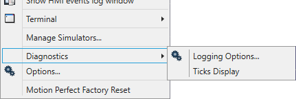
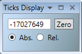

Motion Perfect has some built-in diagnostics which are designed to provide useful information in diagnosing some communications problems and possibly problems with Motion Perfect functionality. Diagnostic functions should not be used unless requested to do so by Trio Motion Technology, as enabling diagnostics increases the load on the application and can, in some cases, lead to unreliability.
Diagnostic functionality is accessed via a submenu of the Tools section of the Motion Perfect main menu.

See " Options - Diagnostics "

When “Abs” is selected the raw ticks count for the Motion Perfect command process on the controller is displayed. When “Rel” is selected a relative ticks count is displayed, which can be set to zero using the “Zero” button.
The tool is used to provide regular, recognizable communications data which can be used in communications debugging. Under normal circumstances it is of little practical use.